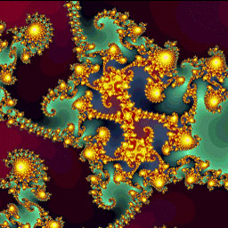
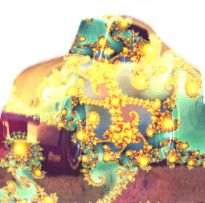

In general, processing images is extremely expensive, so you
probably cannot have that many active pix objects. GEM only reprocesses
images when the source image changes or one of the parameters for a pix
object changes. This means that GEM will only process an image when
something is different, instead of every frame. If you want to do
a lot of processing at start up, but then not change anything once the
patch is running, GEM will only do the computation once.
Modern CPUs use SIMD (Single Instruction - Multiple Data) (like MMX, SSE2, altivec)
to make pixel-processing more effective (by processing data parallely).
Until now, only the macOS version of Gem has support for SIMD for some pix-objects.
MMX/SSE2 boosts will hopefully come in future Gem-releases.
The pix objects are divided into two general groups, those which take one input, and those which require two input images. For example, [pix_invert] will "invert" all of the pixels (if a pixel is white, it will change to black), while [pix_add] will add two images together.
Only some of the pix objects are described here. Look in the reference patches for explanations for the other pix objects.
[pix_invert] - invert the pixel data
[pix_add] - add two pixes together
[pix_mask] - create an alpha mask
[pix_convolve] - convolve a pix with a kernel

Here is the difference between the fractal image and the inverted version.


This patch adds the fractal image with a car image. The processed image will often contain a lot of white pixels, because the data is just added together. This occurs in the resulting image, shown below.


In other words, images are composed of a red, a green, a blue, and an alpha channel. The alpha channel is the transparency of the pixel. [pix_mask] only modifies the alpha channel and does not touch the red, green, or blue data.
The result is this image.

Edge detection is done with a convolution kernel, as is smoothing. The biggest problem is that convolving an image is about the most expensive operation that you can do in GEM.
Look at gem_pix/gemPixConvolve.pd to get an idea of some of the kernels that you can send to [pix_convolve] and the effects that you can get.
If you want to learn the math behind convolution, then find any standard
image processing (or audio processing book, this is just 2D convolution).